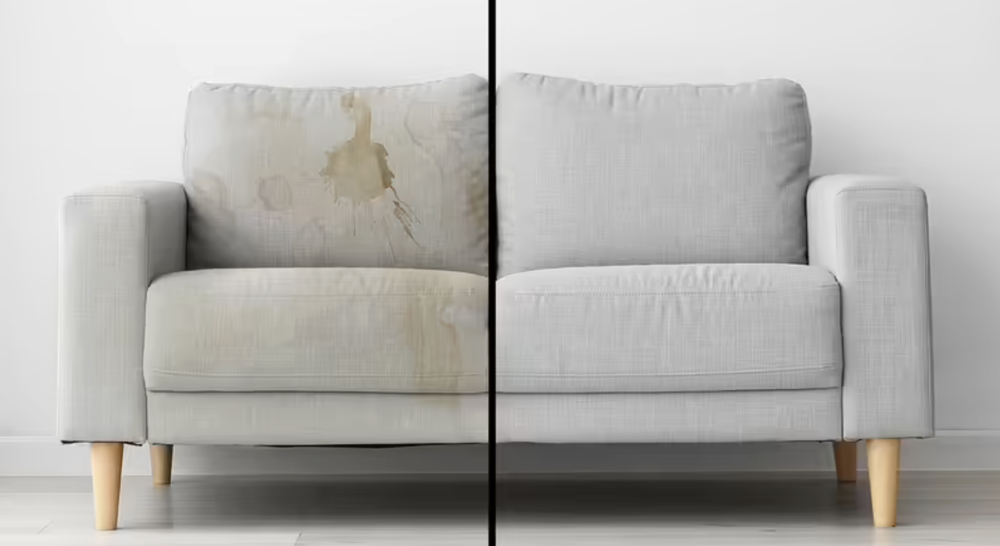
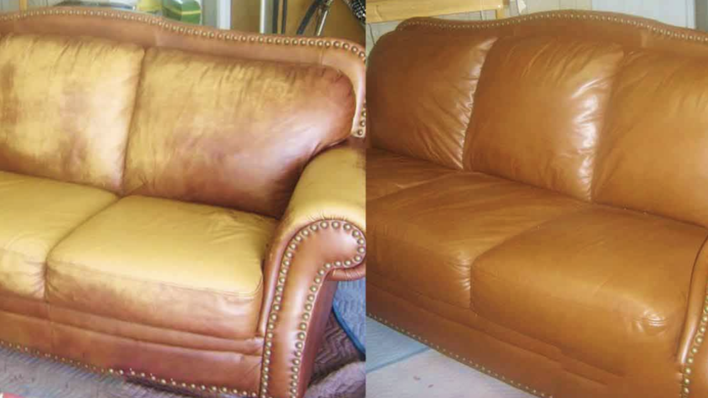
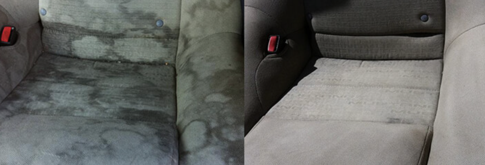
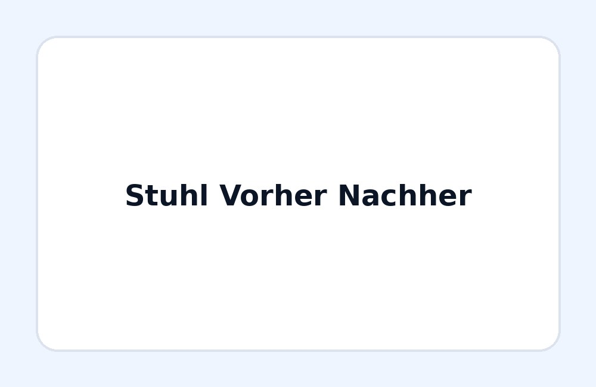
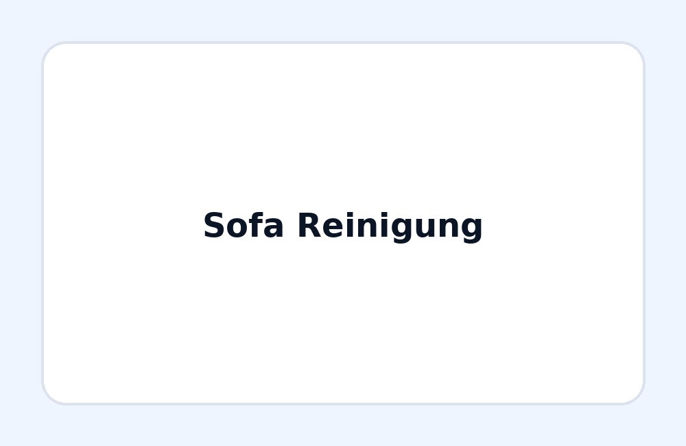
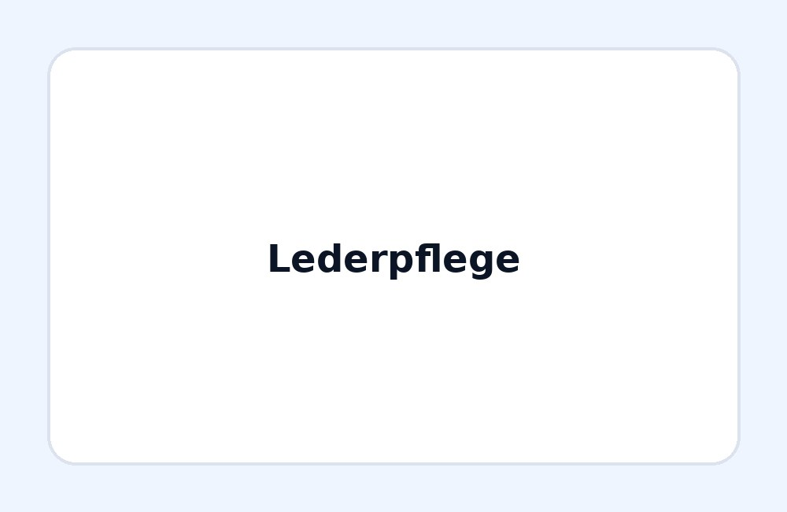
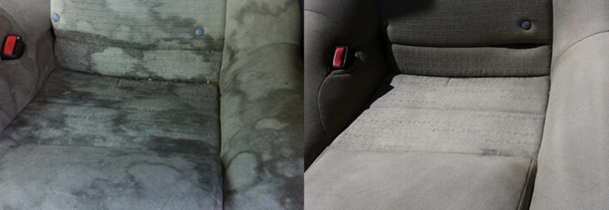
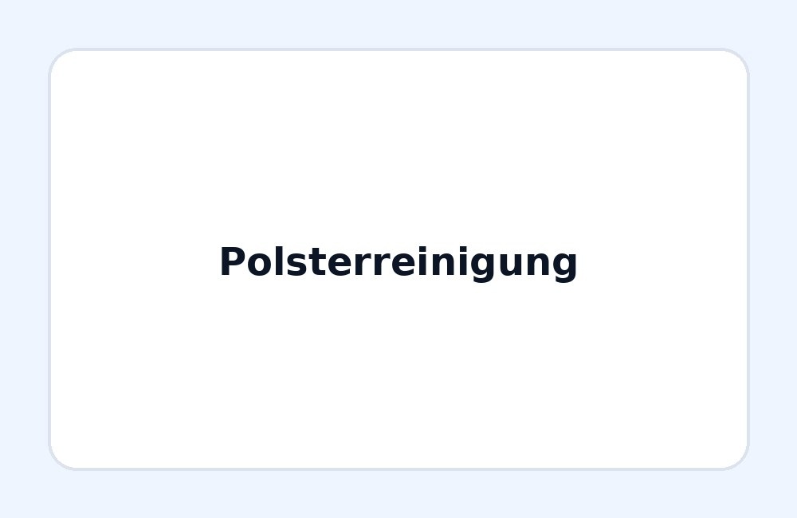
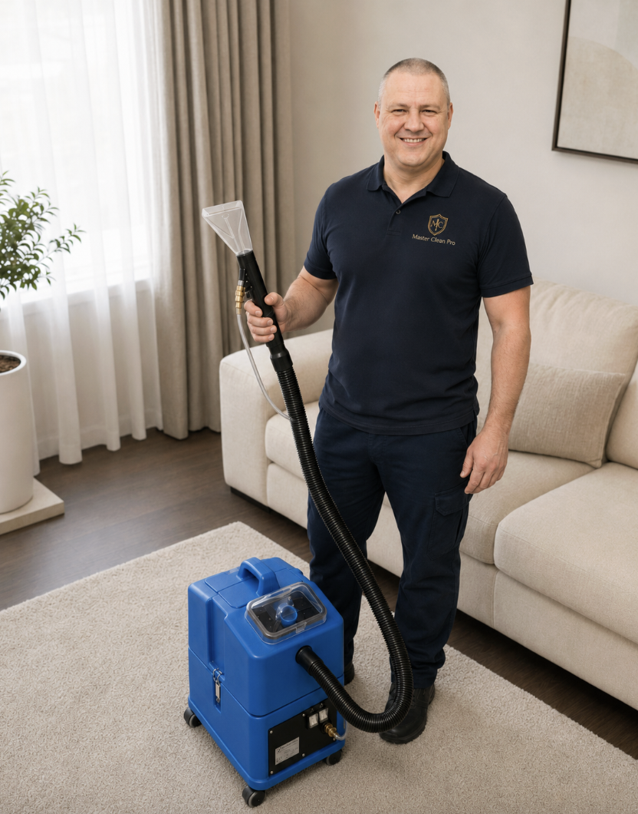

Was kostet die Anfahrt nach Frankfurt?
Die Anfahrt nach Frankfurt am Main ist im Preis enthalten – Sie zahlen dieselben Festpreise wie in Wiesbaden. Nur für Orte weiter außerhalb sprechen wir die Anfahrt vorab mit Ihnen ab.
Sofa, Sessel, Stühle und Autositze professionell bei Ihnen in Frankfurt am Main reinigen lassen. Senden Sie Fotos per WhatsApp – wir geben Ihnen schnell eine ehrliche Preiseinschätzung.
Ganz Frankfurt und Umgebung. Anfahrt inklusive. Termine oft kurzfristig möglich.
Einsatzgebiet Frankfurt am Main
Master Clean Pro reinigt Polstermöbel, Ledermöbel und Autositze direkt bei Ihnen in Frankfurt am Main. Wir kommen aus Wiesbaden zu Ihnen nach Hause, ins Büro oder zum Fahrzeug und bringen ein professionelles Sprüh-Extraktionsgerät mit. Die Anfahrt nach Frankfurt ist im Preis inbegriffen – Sie zahlen dieselben Festpreise wie in Wiesbaden.
Stadtteile: Innenstadt, Sachsenhausen, Westend, Nordend, Bornheim, Bockenheim, Gallus, Ostend, Niederrad, Höchst, Nied, Griesheim, Rödelheim, Hausen, Praunheim, Bergen-Enkheim und alle weiteren Stadtteile.
Umgebung: Eschborn, Hofheim am Taunus, Hattersheim, Kriftel, Bad Soden, Kelkheim, Schwalbach und Offenbach – nach kurzer Absprache.
Anfahrt Frankfurt am Main: inklusive · Mindestauftrag: 79 € pro Termin · Erreichbar Mo–Fr 9–20 Uhr, Sa 9–15 Uhr.
Die Anfahrt nach Frankfurt am Main ist im Preis enthalten – Sie zahlen dieselben Festpreise wie in Wiesbaden. Nur für Orte weiter außerhalb sprechen wir die Anfahrt vorab mit Ihnen ab.
Ja. Neben den Frankfurter Stadtteilen fahren wir auch in umliegende Orte wie Eschborn, Hofheim am Taunus oder Bad Soden. Schreiben Sie uns einfach Ihren Ort per WhatsApp.
Leistungen
Vor Ort in Wiesbaden, Mainz und Frankfurt am Main.

' + this.alt + '';" >Sofas, Sessel, Stühle und Autositze
Wir reinigen Polstermöbel gründlich und materialschonend. Flecken, Alltagsschmutz und Gerüche werden professionell behandelt.

' + this.alt + '';" >Pflege, Auffrischung und lokale Reparatur
Wir behandeln Abnutzung, Kratzer, Farbverlust und kleinere Beschädigungen. Das Ergebnis hängt vom Zustand, der Lederart und der Tiefe der Beschädigung ab.

' + this.alt + '';" >Autositze, Kindersitze und Innenraum
Reinigung von Autositzen, Kindersitzen und Polstern im Fahrzeug. Ideal bei Flecken, Gerüchen und sichtbarer Verschmutzung.
Lederpflege
Wir behandeln Kratzer, Risse, Farbverlust, Abnutzung und trockene Lederoberflächen. Geeignet für Sofas, Sessel und andere Ledermöbel.
Das Ergebnis hängt vom Zustand, der Lederart und der Tiefe der Beschädigung ab.
Autoreinigung
Für Autositze, Kindersitze und textile Innenraumflächen. Preise ab 35 € pro Sitz.
Preise
Endpreis je nach Größe, Material und Verschmutzung. Anfahrt in Wiesbaden, Mainz, Frankfurt und Umgebung inklusive. Fotos helfen bei der Einschätzung. Kosten im Detail mit Rechenbeispielen.
Dreiersofa / Couch
Zweisitzer Sofa
Großes Ecksofa oder Wohnlandschaft
Polstersessel
Polsterstuhl
Ein Autositz
Vordersitze & Rückbank
Kindersitz / Babyschale
Nach Zustand und Aufwand
Mindestwert pro Termin
Wiesbaden, Mainz, Frankfurt & Umgebung
Ablauf
Senden Sie uns Fotos per WhatsApp oder E-Mail.
Wir nennen Ihnen eine transparente Preiseinschätzung.
Wir kommen zu Ihnen nach Hause oder zum Fahrzeug.
Wir reinigen gründlich, materialschonend und professionell.
Galerie
Sehen Sie Beispiele von Polster-, Leder- und Autositzreinigungen.

' + this.alt + '';" >
' + this.alt + '';" >
' + this.alt + '';" >
' + this.alt + '';" >
' + this.alt + '';" >FAQ
In der Regel mehrere Stunden. Die genaue Trocknungszeit hängt vom Material, der Raumtemperatur, der Belüftung und dem Verschmutzungsgrad ab.
Nein. Das Ergebnis hängt vom Zustand, der Lederart und der Tiefe der Beschädigung ab. Wir geben vorab eine ehrliche Einschätzung.
Ja. Wir verwenden professionelle Reinigungsmittel. Die Polster werden gründlich mit einem professionellen Extraktionsgerät ausgespült, sodass Schmutz und Reinigungsrückstände zuverlässig entfernt werden. Nach der vollständigen Trocknung kann das Möbelstück wieder sicher genutzt werden.
Bitte entfernen Sie persönliche Gegenstände und sorgen Sie für freien Zugang. Alles Weitere besprechen wir vor dem Termin.
Ja. Senden Sie uns Fotos per WhatsApp, damit wir den Zustand besser einschätzen und einen Preis nennen können.

Vertrauen vor Ort
Ich arbeite persönlich bei Ihnen vor Ort – mit professioneller Sprühextraktionstechnik und schonender Reinigung für Sofas, Sessel, Ledermöbel und Autositze.
Kontakt
Senden Sie uns kurz Ihre Telefonnummer und Fotos per WhatsApp.
Wir melden uns schnell mit einer Einschätzung.
Telefon: +49 178 9233032
E-Mail: mastercleanpro.info@gmail.com